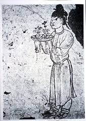

The history of Bonsai
China
There are several ancient references in Egypt and India to preserving plants in trays, a practice that was maintained for decorative and medicinal reasons. The first reference to what we call bonsai dates back to China during the Tang Dynasty (618-907). At that time, they developed the miniature tree gardening called Penjing which literally translated is tray landscape. A Chinese story claims that in the Han Dynasty (206 BC – 220 AD) an emperor set up in his courtyard a landscape complete with hills, valleys, rivers, lakes and trees that represented the entire empire. He arranged the landscape so that he could contemplate his entire empire from his palace window. This miniature landscape art form only he possessed. Anyone who dared to imitate him would characterize a threat and be killed. The first documented evidence of bonsai was discovered in the tomb of Prince Zhang Huai who died in 706 during the Tang Dynasty. They discovered a spectacle of plant paintings on the tomb wall that resemble bonsai. In one of the paintings, a servant is seen carrying a miniature landscape, and in another painting, a servant is carrying a tray containing a tree. With increasing popularity, both commercially and in folklore, Penjing has evolved into more sophisticated art forms. In addition to the aesthetically refined Penjing, one could find trees on which swimming trunks had been rolled to represent dragons and animals, or shelter from which layers of clouds were painted, or trees shaped to resemble the strokes of random character.
Japan
In Japan, the art of developing miniature trees was probably introduced during the Heian period (794-1191). At that time, Japan sent ambassadors to China to study arts, architecture, language, literature, laws and Buddhism making Japanese import Chinese culture and arts on a large scale. The so-called Bonsai in Japan (tree in a pot or tray), was initially a type of art limited to the elite noble class and remained so until the Muromachi Era in the fourteenth century, while it prospered alongside the green tea ceremony to become part of Japanese culture. Before the Edo era in the sixteenth century, every citizen of all classes, from the Daimyo (the feudal lord) to the merchants, would not hesitate at a chance to enjoy the art of bonsai together, and various competitions were held at the time. During this period, the Japanese developed a growing passion for plants and gardens, and bonsai styles appeared in prints and illustrations alongside life events and landscapes. The Japanese bonsai arts are considered to have reached the height of their practice before the eighteenth century. It took the Japanese a long time to refine the art of bonsai. The refinements they developed made bonsai what it is today, and some even consider that the best bonsai is being developed in Japan.
The West
Just as people in the West had somehow been exposed to bonsai, so as early as the sixteenth century by seafarers and missionaries, bonsai in advance came from western Japan and China. The bonsai exhibition in Paris in 1878, 1889, 1900, and the first major bonsai exhibition in London in 1909 increased Western interest in bonsai. It is reported that in 1904 more than six hundred plants were auctioned in a three-day period in New York City. In those early years, many Westerners felt that the trees looked tortured and expressed quite openly their disgust at the way the trees were being treated by bonsai masters. It was not until 1935 that opinions changed and bonsai was finally classified as an art in the west. With the end of World War II, bonsai began to gain popularity in the west with soldiers returning from Japan with bonsai in tow reflecting Western interest in the art. Their knowledge of the art of bonsai was of great interest to many Americans who learned the art. Today, bonsai are sold in department stores, garden centers, nurseries, and many other places. However, most of these are cut while still green and are not the true bonsai produced by bonsai masters. Most trees purchased today are known as pre-bonsai and most are only used as a starting point. A good quality bonsai takes many years to grow and develop and can sometimes be purchased from specialist masters or private collections.